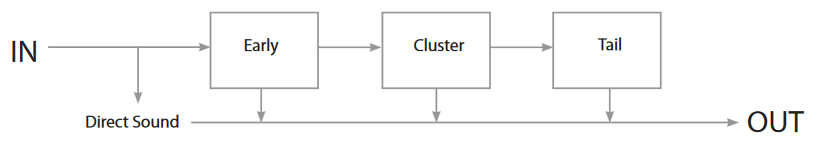

2 Quick Start
Verb is an algorithmic reverberation processor based on a recursive modular engine. As a general guideline, these adjustments will get you started quickly:
- select a preset corresponding to the general character and color you’re looking for
- adjust reverberation time with the main decay time control
- change the size parameter, which is a most prominent characteristic of the room
- tweak the room filters to change tail color to one that suits your needs and taste
Controls such as Damping and Gain are relative to the current preset, they are intended to give a ‘more’ and ‘less’ access to that parameter.
2.1 Block diagram

The block diagram above shows the global structure of the reverberation engine, which governs the time-structure of the reverberation tail.
The direct (dry) signal is fed straight to the output. It corresponds to the direct sound, i.e. the direct path from the source to the listener’s ears. This is always the first part of the sound that is heard.
The input is fed in parallel to the early reflections generator, abbreviated EARLY. Early reflections play a crucial role in our spatial perception of sound, as they allow us to build a mental representation of the surrounding environment (locations and materials of the walls, fl oor and ceiling). These reflections vary with source position and are panned accordingly.
The output of the EARLY stage is fed to a second generator, named CLUSTER, which is responsible for later early reflections. These diff er from early reflections in that they come later and with increased density. This models a transition stage between early and LATE/TAIL generators. In a typical standard configuration, they are a component of the whole acoustic space with no particular localization in order to blend in seamlessly. You can however force them to be directive by changing the diffuseness parameter.
The LATE/TAIL stage finally generates the reverberation tail. Acoustical analysis of this component has shown it to consist of dense material, homogeneous with the whole of the reverberated space. As with CLUSTER, the diff useness parameter allows you to override this natural behavior.
A good understanding of this time structure and how it affects perception of sound and space is key to be able to exploit any reverberation system to its full potential and achieve the best sonic results.